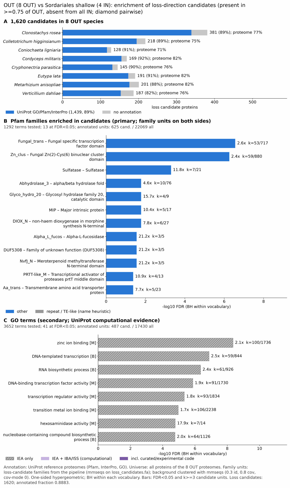

sordariales shallow: functional enrichment (loss)
One-sided hypergeometric test per term; Benjamini-Hochberg FDR within each scope, level and vocabulary. Candidates are the loss candidates: gene families present in the OUT group and absent from the IN group. Universe: proteome. Background clustered: True (102586 sequences in 43018 clusters, mmseqs easy-cluster --min-seq-id 0.3 -c 0.8). Family level: one unit per candidate family and per background cluster.
Sources: Pfam: 2026-01-27-Pfam38.2; InterPro entries: 110.0; GO: releases/2026-07-26; analysis generated 2026-10-12T18:25:18. Source tables: studies/fungi/sordariales_shallow/analysis/enrichment/outputs/loss/proteome_clustered.
Full record: PROVENANCE. Run report: report.html.
- Annotation provenance is not fully recorded: PROVENANCE.yaml lists the per-species annotation files and their checksums, but not the UniProt release they come from.
- GO results are secondary. GO annotations include computational evidence (IEA, IBA); the GO evidence column shows if a term has non-IEA support.
- Candidate families (pipeline clustering of candidates) and background clusters (mmseqs clustering of the background proteome) are made by different runs, so family-level counts are not fully comparable.
Summary figure

Annotation coverage
Fraction of proteins with at least one term per vocabulary. Universe = all proteins of the species; candidates = the candidate set.
| Species | Set | Proteins | Pfam | Pfam clan | InterPro | GO | Any |
|---|---|---|---|---|---|---|---|
| Clonrose | universe | 21140 | 70.6% | 59.9% | 76.9% | 57.7% | 77.3% |
| Clonrose | candidates | 381 | 82.4% | 72.4% | 87.9% | 65.1% | 89.0% |
| Collhigg | universe | 14636 | 69.5% | 56.6% | 74.6% | 60.0% | 74.9% |
| Collhigg | candidates | 218 | 83.5% | 69.3% | 87.6% | 64.7% | 89.5% |
| Conilign | universe | 13658 | 65.5% | 53.5% | 70.3% | 55.3% | 70.6% |
| Conilign | candidates | 128 | 85.9% | 71.1% | 91.4% | 66.4% | 91.4% |
| Cordmili | universe | 9651 | 76.5% | 62.5% | 81.4% | 66.8% | 81.7% |
| Cordmili | candidates | 169 | 78.1% | 68.0% | 90.5% | 57.4% | 91.7% |
| Cryppara | universe | 11636 | 71.2% | 58.0% | 76.1% | 60.8% | 76.3% |
| Cryppara | candidates | 145 | 85.5% | 73.8% | 89.7% | 60.7% | 90.3% |
| Eutylata | universe | 11684 | 75.7% | 61.9% | 82.1% | 64.8% | 82.5% |
| Eutylata | candidates | 191 | 78.5% | 66.5% | 89.5% | 61.8% | 90.6% |
| Metaanis | universe | 11404 | 76.3% | 62.7% | 81.5% | 65.3% | 81.8% |
| Metaanis | candidates | 201 | 77.1% | 68.2% | 87.6% | 57.2% | 87.6% |
| Vertdahl | universe | 10397 | 69.6% | 56.7% | 75.2% | 61.5% | 75.6% |
| Vertdahl | candidates | 187 | 72.7% | 61.0% | 79.1% | 57.2% | 81.8% |
| ALL_OUT | universe | 104206 | 71.5% | 58.8% | 77.0% | 60.9% | 77.3% |
| ALL_OUT | candidates | 1620 | 80.4% | 69.0% | 87.7% | 61.7% | 88.8% |
Tests summary
Per vocabulary: terms with FDR < 0.05 / terms tested. Protein level counts proteins; family level counts candidate families and background clusters.
| Scope | Level | Cand. units | Pfam sig / tested | Pfam clan sig / tested | InterPro sig / tested | GO sig / tested |
|---|---|---|---|---|---|---|
| whole_set | family | 814 | 13 / 1292 | 7 / 370 | 28 / 2669 | 41 / 3652 |
| whole_set | protein | 1620 | 110 / 4928 | 39 / 522 | 220 / 10112 | 157 / 6224 |
| Clonrose | family | 276 | 2 / 508 | 3 / 267 | 3 / 1157 | 7 / 2275 |
| Clonrose | protein | 381 | 18 / 771 | 13 / 303 | 40 / 1738 | 49 / 2596 |
| Collhigg | family | 201 | 1 / 445 | 2 / 251 | 3 / 1016 | 0 / 2393 |
| Collhigg | protein | 218 | 5 / 568 | 2 / 270 | 12 / 1328 | 8 / 2593 |
| Conilign | family | 116 | 1 / 386 | 0 / 248 | 0 / 928 | 0 / 2525 |
| Conilign | protein | 128 | 6 / 507 | 1 / 263 | 7 / 1184 | 2 / 2684 |
| Cordmili | family | 150 | 0 / 311 | 0 / 230 | 1 / 794 | 6 / 2075 |
| Cordmili | protein | 169 | 4 / 389 | 5 / 247 | 8 / 983 | 7 / 2207 |
| Cryppara | family | 136 | 0 / 349 | 0 / 230 | 0 / 840 | 0 / 2052 |
| Cryppara | protein | 145 | 1 / 449 | 0 / 251 | 3 / 1077 | 2 / 2211 |
| Eutylata | family | 181 | 1 / 379 | 0 / 233 | 4 / 928 | 6 / 2435 |
| Eutylata | protein | 191 | 1 / 475 | 1 / 246 | 5 / 1158 | 7 / 2572 |
| Metaanis | family | 183 | 1 / 391 | 3 / 255 | 0 / 922 | 0 / 2155 |
| Metaanis | protein | 201 | 3 / 496 | 4 / 270 | 5 / 1151 | 4 / 2308 |
| Vertdahl | family | 175 | 0 / 301 | 0 / 221 | 2 / 766 | 5 / 2344 |
| Vertdahl | protein | 187 | 0 / 396 | 1 / 238 | 2 / 968 | 5 / 2467 |
Top 25 Pfam terms (whole set, family level)
25 rows shown, ordered by FDR then p-value; 13 have FDR < 0.05 (bold).
| Term | Name | k / N cand. | n / M bg | Fold | FDR (BH) |
|---|---|---|---|---|---|
| PF04082 | Fungal_trans: Fungal specific transcription factor domain | 53 / 625 | 717 / 22069 | 2.61 | 2.74e-07 |
| PF00172 | Zn_clus: Fungal Zn(2)-Cys(6) binuclear cluster domain | 59 / 625 | 880 / 22069 | 2.367 | 5.51e-07 |
| PF00884 | Sulfatase: Sulfatase | 7 / 625 | 21 / 22069 | 11.77 | 5.01e-04 |
| PF07859 | Abhydrolase_3: alpha/beta hydrolase fold | 10 / 625 | 76 / 22069 | 4.646 | 0.017 |
| PF00728 | Glyco_hydro_20: Glycosyl hydrolase family 20, catalytic domain | 4 / 625 | 9 / 22069 | 15.694 | 0.017 |
| PF00230 | MIP: Major intrinsic protein | 5 / 625 | 17 / 22069 | 10.385 | 0.017 |
| PF14226 | DIOX_N: non-haem dioxygenase in morphine synthesis N-terminal | 6 / 625 | 27 / 22069 | 7.847 | 0.017 |
| PF01120 | Alpha_L_fucos: Alpha-L-fucosidase | 3 / 625 | 5 / 22069 | 21.186 | 0.028 |
| PF17233 | DUF5308: Family of unknown function (DUF5308) | 3 / 625 | 5 / 22069 | 21.186 | 0.028 |
| PF27593 | NvfJ_N: Meroterpenoid methyltransferase N-terminal domain | 3 / 625 | 5 / 22069 | 21.186 | 0.028 |
| PF30880 | PRTT-like_M: Transcriptional activator of proteases prtT middle domain | 4 / 625 | 13 / 22069 | 10.865 | 0.042 |
| PF01490 | Aa_trans: Transmembrane amino acid transporter protein | 5 / 625 | 23 / 22069 | 7.676 | 0.042 |
| PF02838 | Glyco_hydro_20b: Glycosyl hydrolase family 20, domain 2 | 3 / 625 | 6 / 22069 | 17.655 | 0.042 |
| PF00232 | Glyco_hydro_1: Glycosyl hydrolase family 1 | 3 / 625 | 7 / 22069 | 15.133 | 0.064 |
| PF11905 | DUF3425: Domain of unknown function (DUF3425) | 6 / 625 | 39 / 22069 | 5.432 | 0.064 |
| PF00144 | Beta-lactamase: Beta-lactamase | 6 / 625 | 42 / 22069 | 5.044 | 0.086 |
| PF10021 | PARG_cat_microb: Microbial-type PARG, catalytic domain | 3 / 625 | 8 / 22069 | 13.241 | 0.086 |
| PF03959 | FSH1: Serine hydrolase (FSH1) | 4 / 625 | 20 / 22069 | 7.062 | 0.144 |
| PF13520 | AA_permease_2: Amino acid permease | 5 / 625 | 33 / 22069 | 5.35 | 0.144 |
| PF00355 | Rieske: Rieske [2Fe-2S] domain | 3 / 625 | 10 / 22069 | 10.593 | 0.144 |
| PF01596 | Methyltransf_3: O-methyltransferase | 3 / 625 | 10 / 22069 | 10.593 | 0.144 |
| PF03171 | 2OG-FeII_Oxy: 2OG-Fe(II) oxygenase superfamily | 5 / 625 | 34 / 22069 | 5.193 | 0.146 |
| PF01546 | Peptidase_M20: Peptidase family M20/M25/M40 | 4 / 625 | 21 / 22069 | 6.726 | 0.146 |
| PF03330 | DPBB_1: Lytic transglycolase | 3 / 625 | 11 / 22069 | 9.63 | 0.156 |
| PF13378 | MR_MLE_C: Enolase C-terminal domain-like | 3 / 625 | 11 / 22069 | 9.63 | 0.156 |
Top 25 InterPro terms (whole set, family level)
25 rows shown, ordered by FDR then p-value; 25 have FDR < 0.05 (bold).
| Term | Name | k / N cand. | n / M bg | Fold | FDR (BH) |
|---|---|---|---|---|---|
| IPR007219 | Domain:Xylanolytic transcriptional activator-like, regulatory domain | 58 / 689 | 734 / 25056 | 2.874 | 1.75e-09 |
| IPR036864 | Homologous_superfamily:Zn(2)-C6 fungal-type DNA-binding domain superfamily | 63 / 689 | 986 / 25056 | 2.324 | 7.06e-07 |
| IPR001138 | Domain:Zn(2)Cys(6) fungal-type DNA-binding domain | 63 / 689 | 1002 / 25056 | 2.286 | 8.90e-07 |
| IPR000917 | Domain:Sulfatase domain | 7 / 689 | 21 / 25056 | 12.122 | 6.39e-04 |
| IPR050738 | Family:Sulfatase enzyme | 5 / 689 | 9 / 25056 | 20.203 | 7.96e-04 |
| IPR008928 | Homologous_superfamily:Six-hairpin glycosidase superfamily | 13 / 689 | 94 / 25056 | 5.029 | 7.96e-04 |
| IPR012341 | Homologous_superfamily:Six-hairpin glycosidase-like superfamily | 12 / 689 | 81 / 25056 | 5.388 | 8.09e-04 |
| IPR053221 | Family:Proline hydroxylase BuaE | 6 / 689 | 16 / 25056 | 13.637 | 8.22e-04 |
| IPR052764 | Family:Glycosyl Hydrolase 20 Enzymes | 4 / 689 | 5 / 25056 | 29.093 | 8.22e-04 |
| IPR050363 | Family:Major Intrinsic Protein/Aquaporin | 5 / 689 | 10 / 25056 | 18.183 | 9.29e-04 |
| IPR050300 | Family:GDXG lipolytic enzyme | 10 / 689 | 66 / 25056 | 5.51 | 0.003 |
| IPR034593 | Family:D-galactonate dehydratase DgoD-like | 4 / 689 | 7 / 25056 | 20.78 | 0.004 |
| IPR017850 | Homologous_superfamily:Alkaline-phosphatase-like, core domain superfamily | 8 / 689 | 44 / 25056 | 6.612 | 0.005 |
| IPR013094 | Domain:Alpha/beta hydrolase fold-3 | 10 / 689 | 76 / 25056 | 4.785 | 0.008 |
| IPR015883 | Domain:Beta-hexosaminidase, catalytic domain | 4 / 689 | 9 / 25056 | 16.163 | 0.011 |
| IPR000425 | Family:Major intrinsic protein | 5 / 689 | 17 / 25056 | 10.696 | 0.012 |
| IPR026992 | Domain:Non-haem dioxygenase, N-terminal domain | 6 / 689 | 27 / 25056 | 8.081 | 0.012 |
| IPR023271 | Homologous_superfamily:Aquaporin-like | 5 / 689 | 18 / 25056 | 10.102 | 0.015 |
| IPR000933 | Family:Glycoside hydrolase, family 29 | 3 / 689 | 5 / 25056 | 21.819 | 0.022 |
| IPR035186 | Family:Protein of unknown function DUF5308 | 3 / 689 | 5 / 25056 | 21.819 | 0.022 |
| IPR049818 | Family:Expansin EXLX1-like | 3 / 689 | 5 / 25056 | 21.819 | 0.022 |
| IPR051654 | Family:Fungal Meroterpenoid Biosynthesis Methyltransferases | 3 / 689 | 5 / 25056 | 21.819 | 0.022 |
| IPR057739 | Domain:Glycoside hydrolase family 29, N-terminal | 3 / 689 | 5 / 25056 | 21.819 | 0.022 |
| IPR060188 | Domain:Mmethyltransferase nvfJ-like, N-terminal domain | 3 / 689 | 5 / 25056 | 21.819 | 0.022 |
| IPR013057 | Domain:Amino acid transporter, transmembrane domain | 5 / 689 | 23 / 25056 | 7.906 | 0.037 |
Top 15 GO terms (whole set, family level) — secondary, computational evidence (IEA/IBA) included
15 rows shown, ordered by FDR then p-value; 15 have FDR < 0.05 (bold).
| Term | Name | k / N cand. | n / M bg | Fold | FDR (BH) | GO evidence | Families with non-IEA |
|---|---|---|---|---|---|---|---|
| GO:0008270 | molecular_function:zinc ion binding | 100 / 487 | 1736 / 17430 | 2.062 | 4.40e-09 | IEA_only | 0 |
| GO:0006351 | biological_process:DNA-templated transcription | 59 / 487 | 844 / 17430 | 2.502 | 1.34e-07 | IEA_only | 0 |
| GO:0032774 | biological_process:RNA biosynthetic process | 61 / 487 | 926 / 17430 | 2.358 | 4.50e-07 | IEA_only | 0 |
| GO:0141187 | biological_process:nucleic acid biosynthetic process | 61 / 487 | 960 / 17430 | 2.274 | 1.36e-06 | IEA_only | 0 |
| GO:0003700 | molecular_function:DNA-binding transcription factor activity | 91 / 487 | 1730 / 17430 | 1.883 | 1.36e-06 | IEA_only | 0 |
| GO:0140110 | molecular_function:transcription regulator activity | 93 / 487 | 1834 / 17430 | 1.815 | 4.58e-06 | IEA_only | 0 |
| GO:0046914 | molecular_function:transition metal ion binding | 106 / 487 | 2238 / 17430 | 1.695 | 1.09e-05 | IEA_only | 0 |
| GO:0015929 | molecular_function:hexosaminidase activity | 7 / 487 | 14 / 17430 | 17.895 | 1.68e-05 | IEA_only | 0 |
| GO:0034654 | biological_process:nucleobase-containing compound biosynthetic process | 64 / 487 | 1126 / 17430 | 2.034 | 1.74e-05 | IEA_only | 0 |
| GO:0000981 | molecular_function:DNA-binding transcription factor activity, RNA polymerase II-specific | 76 / 487 | 1469 / 17430 | 1.852 | 3.79e-05 | IEA_only | 0 |
| GO:0045944 | biological_process:positive regulation of transcription by RNA polymerase II | 34 / 487 | 501 / 17430 | 2.429 | 6.17e-04 | IEA_only | 0 |
| GO:0005975 | biological_process:carbohydrate metabolic process | 44 / 487 | 757 / 17430 | 2.08 | 9.77e-04 | IEA_only | 0 |
| GO:0015168 | molecular_function:glycerol transmembrane transporter activity | 5 / 487 | 10 / 17430 | 17.895 | 9.77e-04 | IEA_only | 0 |
| GO:0015254 | molecular_function:glycerol channel activity | 5 / 487 | 10 / 17430 | 17.895 | 9.77e-04 | IEA_only | 0 |
| GO:0008484 | molecular_function:sulfuric ester hydrolase activity | 6 / 487 | 17 / 17430 | 12.632 | 9.81e-04 | IEA_only | 0 |
Actin cytoskeleton controls
Known actin-related families and how many of their proteins pass each filter. Protein ID columns are left out.
| control | pfam_ids | desc_regex | OUT_universe | OUT_in_matrix | OUT_pass_outgroup_rule | candidates | near_miss_in1 | near_miss_in2 | n_Clonrose | n_Collhigg | n_Conilign | n_Cordmili | n_Cryppara | n_Eutylata | n_Metaanis | n_Vertdahl | n_Chaeglob | n_Neurcras | n_Podoanse | n_Sordmacr |
|---|---|---|---|---|---|---|---|---|---|---|---|---|---|---|---|---|---|---|---|---|
| Arp2/3 ARPC2 (P34-Arc) | PF04045 | 8 | 8 | 8 | 0 | 0 | 0 | 1 | 1 | 1 | 1 | 1 | 1 | 1 | 1 | 1 | 1 | 1 | 1 | |
| Arp2/3 ARPC3 (P21-Arc) | PF04062 | 8 | 8 | 8 | 0 | 0 | 0 | 1 | 1 | 1 | 1 | 1 | 1 | 1 | 1 | 1 | 1 | 1 | 1 | |
| Arp2/3 ARPC4 | PF05856 | 7 | 7 | 7 | 0 | 0 | 0 | 1 | 1 | 1 | 1 | 1 | 1 | 1 | 0 | 1 | 1 | 1 | 1 | |
| Arp2/3 ARPC5 (P16-Arc) | PF04699 | 8 | 8 | 8 | 0 | 0 | 0 | 1 | 1 | 1 | 1 | 1 | 1 | 1 | 1 | 1 | 1 | 1 | 1 | |
| Arp2/3 ARPC1 (description only) | arp2/3 complex.*(41|p41|subunit 1)|ARPC1 | 0 | 0 | 0 | 0 | 0 | 0 | 0 | 0 | 0 | 0 | 0 | 0 | 0 | 0 | 0 | 0 | 0 | 0 | |
| Arp2 / Arp3 (description only) | actin-related protein (2|3)\b|\bARP[23]\b | 127 | 127 | 124 | 3 | 1 | 3 | 6 | 6 | 6 | 7 | 6 | 6 | 84 | 6 | 7 | 6 | 7 | 6 | |
| WAVE complex NCKAP1 | PF09735 | 0 | 0 | 0 | 0 | 0 | 0 | 0 | 0 | 0 | 0 | 0 | 0 | 0 | 0 | 0 | 0 | 0 | 0 | |
| WAVE complex CYFIP (FragX_IP) | PF05994 | 0 | 0 | 0 | 0 | 0 | 0 | 0 | 0 | 0 | 0 | 0 | 0 | 0 | 0 | 0 | 0 | 0 | 0 | |
| WAVE complex ABI | PF07815|PF27594 | 0 | 0 | 0 | 0 | 0 | 0 | 0 | 0 | 0 | 0 | 0 | 0 | 0 | 0 | 0 | 0 | 0 | 0 | |
| SCAR/WAVE (SCAR_helical) | PF27569 | 0 | 0 | 0 | 0 | 0 | 0 | 0 | 0 | 0 | 0 | 0 | 0 | 0 | 0 | 0 | 0 | 0 | 0 | |
| WASP family (WH1) | PF00568 | 7 | 7 | 6 | 0 | 0 | 0 | 2 | 1 | 1 | 1 | 0 | 0 | 1 | 1 | 1 | 1 | 1 | 1 | |
| WH2 motif (WASP, WAVE, others) | PF02205 | 9 | 9 | 9 | 0 | 0 | 0 | 2 | 2 | 1 | 1 | 0 | 1 | 1 | 1 | 2 | 1 | 2 | 1 | |
| Formin FH2 | PF02181 | 6 | 6 | 6 | 0 | 0 | 0 | 1 | 1 | 1 | 1 | 0 | 1 | 1 | 0 | 1 | 1 | 1 | 1 | |
| Formin Drf_GBD / Drf_FH3 / Drf_DAD | PF06371|PF06367|PF06345 | 12 | 12 | 12 | 0 | 0 | 0 | 2 | 2 | 2 | 2 | 0 | 2 | 1 | 1 | 1 | 2 | 2 | 1 | |
| Ena/VASP (VASP_tetra) | PF08776 | 0 | 0 | 0 | 0 | 0 | 0 | 0 | 0 | 0 | 0 | 0 | 0 | 0 | 0 | 0 | 0 | 0 | 0 | |
| Coronin (description only) | coronin | 7 | 7 | 7 | 0 | 0 | 0 | 1 | 0 | 1 | 1 | 1 | 1 | 1 | 1 | 1 | 1 | 1 | 1 | |
| Cortactin (HS1_rep) | PF02218 | 0 | 0 | 0 | 0 | 0 | 0 | 0 | 0 | 0 | 0 | 0 | 0 | 0 | 0 | 0 | 0 | 0 | 0 | |
| Myosin 2 tail (Myosin_tail_1) | PF01576 | 1 | 1 | 1 | 0 | 0 | 0 | 1 | 0 | 0 | 0 | 0 | 0 | 0 | 0 | 0 | 0 | 0 | 0 | |
| Myosin head (all myosins) | PF00063 | 30 | 30 | 30 | 0 | 0 | 0 | 4 | 4 | 4 | 4 | 3 | 4 | 4 | 3 | 3 | 4 | 4 | 4 |
Page written by bin/generate_enrichment_page.py.